Real-time view of your entire environment
Datacenters, farms, servers and sessions on one live screen — your whole TSplus environment at a glance.
Monitor, automate and secure all your TSplus servers from a single native app on desktop and mobile — even servers behind NAT or CGNAT, with no inbound ports and no VPN.
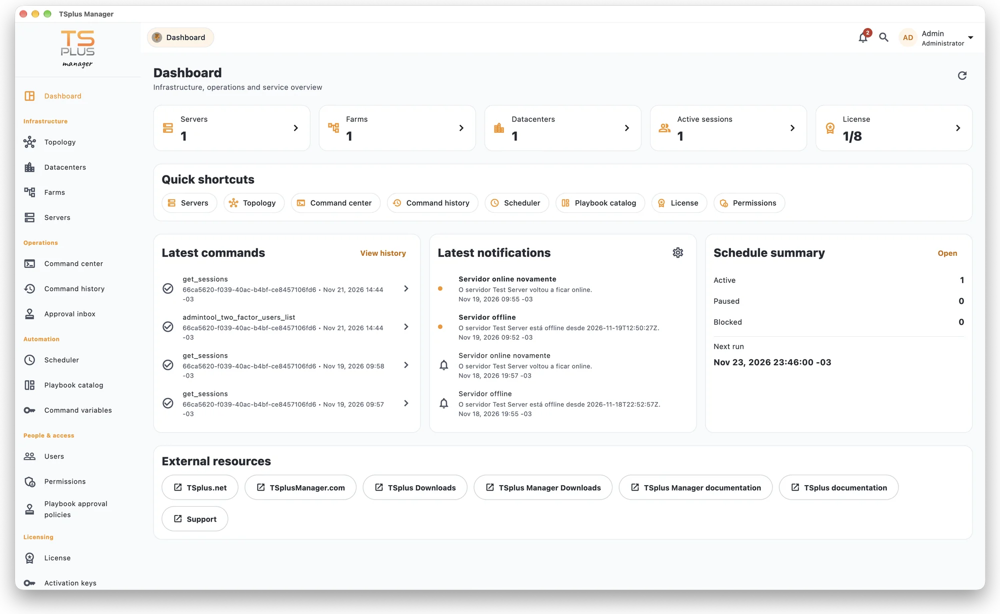
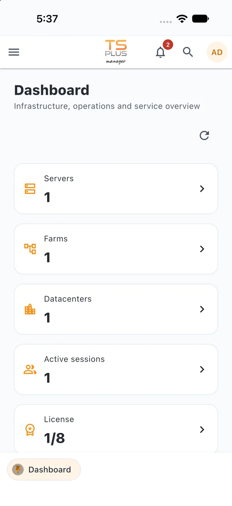
TSplus servers usually sit inside farms, branch offices and customer networks — often behind CGNAT. Reaching them traditionally means compromises:
A lightweight Worker service on each Windows server connects outward to our secure relay through an encrypted tunnel. Nothing to open, nothing exposed — and it works from any network.
A lightweight Windows service on each TSplus server. It only makes outbound connections.
The Worker keeps an encrypted, authenticated and continuously validated tunnel to the TSplus Manager relay.
Open the app on your desktop, tablet or phone and operate every server in real time.
From a single server to hundreds across datacenters and farms, TSplus Manager gives your team visibility, control and automation in one console.
Datacenters, farms, servers and sessions on one live screen — your whole TSplus environment at a glance.
Live CPU, memory, disk, sessions and uptime for each server, with history from 1 hour to 7 days.
Track the health and load of each TSplus farm and of every server inside it.
Execute commands on one server or many at once and follow every step and result live.
Schedule commands for the right moment — recurring tasks and maintenance windows, with pause and resume.
A role hierarchy with granular permissions and rigorous approval rules before sensitive commands can run.
Instant alerts with relevant context: servers offline or back online, and CPU, memory or disk above their limits.
Works directly with TSplus Remote Access: sessions, users, configuration and administration actions.
Every controlled host talks to TSplus Manager through an encrypted, authenticated tunnel — with no open ports.
Every execution is recorded with the user, date and time, target, duration and result.
Ready-made TSplus administration actions: back up and restore configuration, activate licenses, manage two-factor users, set the proxy, run a system audit and more.
See who is connected, send a message, disconnect or log off any session in one tap.
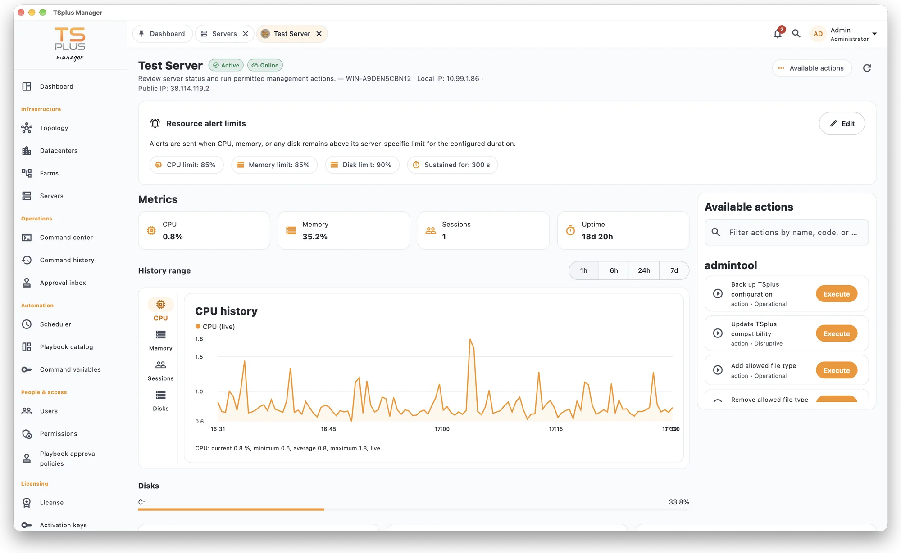
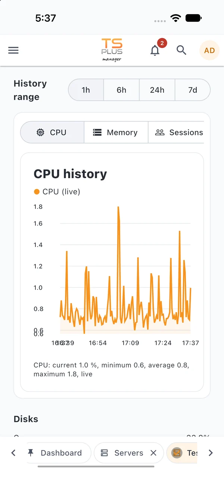
Live data streams straight from each server to every connected app. See load, sessions and health in real time and act before users notice a problem.
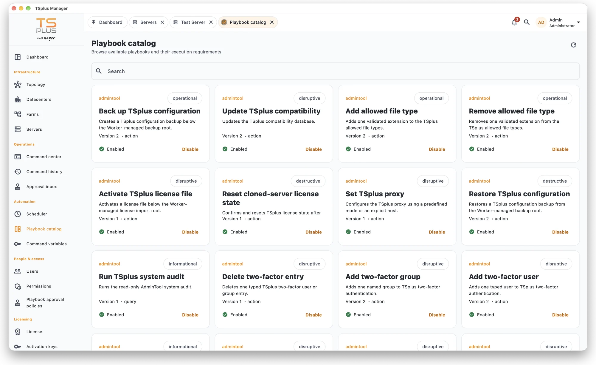
Turn routine TSplus administration into safe, repeatable actions. Pick a playbook, choose the servers and run it now or on a schedule.
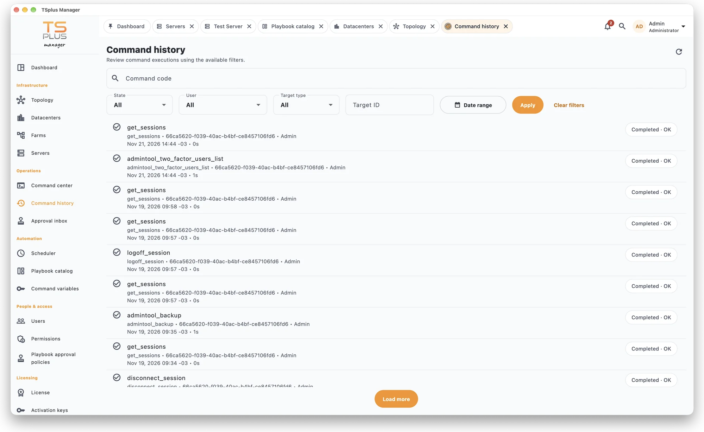
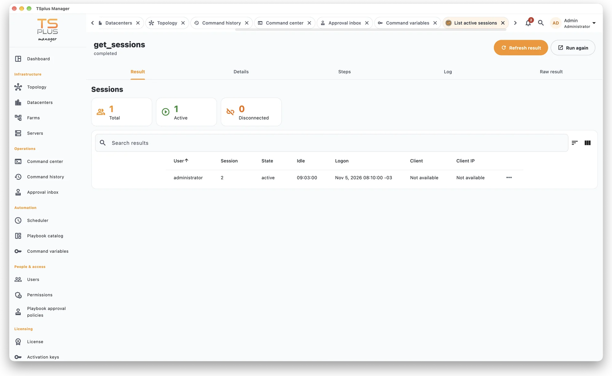
Who did what, where and when — with the full result. Ready for audits, troubleshooting and compliance reviews.
TSplus Manager was designed so that your servers never have to be exposed to the internet to be managed.
Servers never accept incoming connections from the internet. The Worker only connects outward.
Every connection is encrypted and authenticated, with continuous checks on all traffic crossing the tunnel.
The platform runs behind a global edge network with DDoS protection. Origin servers are never exposed.
Workers run only known, catalogued actions — never arbitrary commands sent from outside.
Granular permissions and approval policies keep sensitive actions in the right hands.
Every command is logged and auditable, from request to result.
A true enterprise application, installed on the devices your team already uses — not just another browser tab.
Windows · macOS · Linux
iOS · iPadOS · Android
Changes are pushed live to every device the moment they happen.
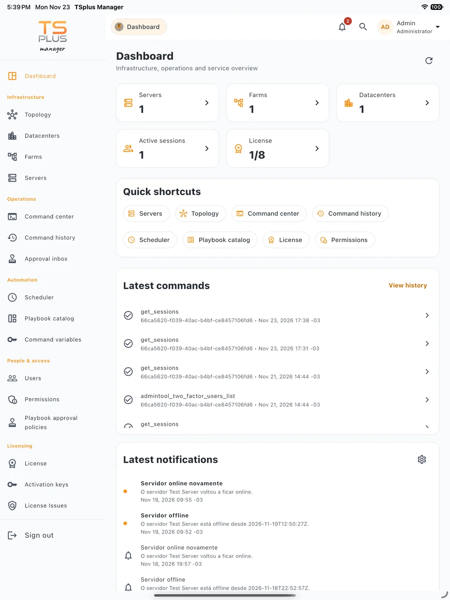
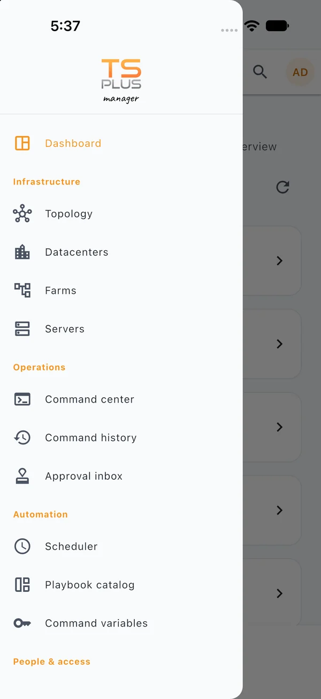
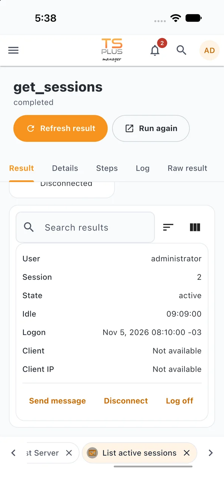
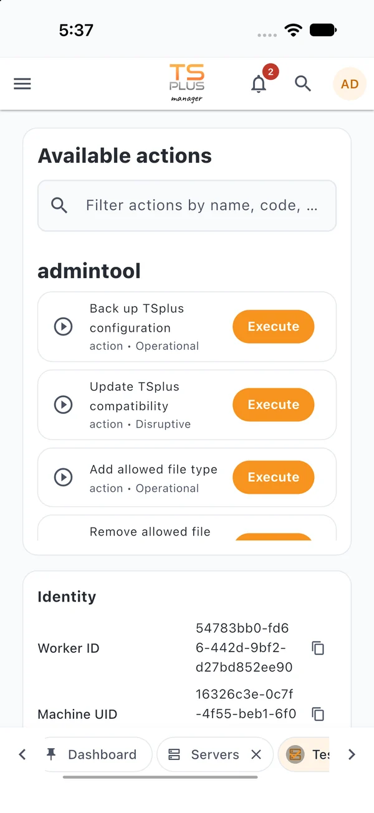
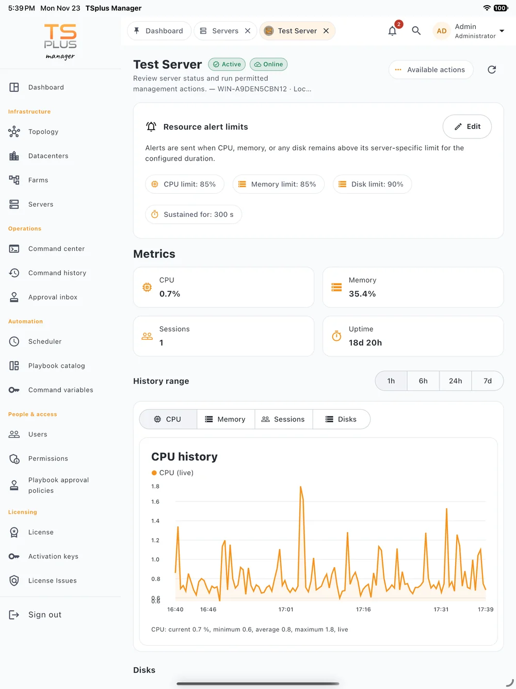
Traffic is distributed through a worldwide edge network, keeping latency low wherever your team is.
The relay and API scale horizontally — capacity grows with your infrastructure.
Updates are pushed live to every connected app. No manual refresh needed.
A lean, compiled backend designed for high concurrency and a light footprint on your servers.
We host and operate the relay and API for you. Subscribe and start managing servers in minutes.
Run the relay and API on your own infrastructure for full data sovereignty and specific compliance requirements.
Contact us for pricing and early access.
Tell us about your TSplus environment and we will show you how TSplus Manager brings it all under one console. We usually reply within one business day.
contact@tsplusmanager.com